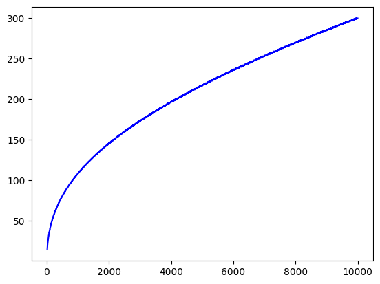

import math
from scipy.stats import norm
import matplotlib.pyplot as plt
import numpy as np
import random# Evaluate the decision limit formula
def decision_limit_fn(formula, n):
try:
return eval(formula.replace("n", str(n)))
except Exception as e:
raise ValueError(f"Error evaluating decision-limit formula: {e}")
output_list = []
# Main simulation function
def simulate(bias=0.,n=1000000,p_limit=0.05):
decision_limit_formula = "n / (n + 10000)"
boundary = 0
portion = {0: 1}
decided = 0
prob_increase = (1 + bias) / (2 + bias)
finished = 0
fix_ratio = 1 # Hack for roundoff error
for j in range(1, n + 1):
old_portion = portion
portion = {}
total_running = 0
# Update portion values
for i in range(-boundary, boundary + 1, 2):
old_portion[i] *= fix_ratio
total_running += old_portion[i]
portion[i - 1] = portion.get(i - 1, 0) + (1 - prob_increase) * old_portion[i]
portion[i + 1] = portion.get(i + 1, 0) + prob_increase * old_portion[i]
fix_ratio = (1 - finished) / total_running
boundary += 1
allowed_decisions = decision_limit_fn(decision_limit_formula, j) * p_limit
this_decision = 0
if bias >= 0:
this_decision += portion.get(-boundary, 0)
if bias <= 0:
this_decision += portion.get(boundary, 0)
if this_decision + decided <= allowed_decisions:
decided += this_decision
finished += portion.pop(boundary, 0)
finished += portion.pop(-boundary, 0)
standard_deviations = boundary / math.sqrt(j)
p_value = 2 * norm.sf(standard_deviations)
#print(f"{j}\t{boundary}\t{finished}\t{standard_deviations:.6f}\t{p_value:.6f}")
output_list.append([j, boundary, finished,standard_deviations,p_value])
boundary -= 2
if boundary < 0:
break
simulate(0,10000)output_arr = np.array(output_list)plt.figure()
plt.plot(output_arr[:,0], output_arr[:,1], 'b')
plt.show()
pC = 0.2
#pB = random.random()
pT = 0.3
N = 8000sumC = 0
sumT = 0
#threshold = 2.25*np.sqrt(N)
threshold = 2.*np.sqrt(N)
print(threshold)
for i in range(N//2):
rC = random.random()
rT = random.random()
# Successful conversions
if rC < pC:
sumC += 1
elif rT < pT:
sumT += 1
# Check to see if we should quit the loop
if sumT - sumC > threshold:
print(f'Treatment won at {i}')
break
#elif sumB - sumR > threshold:
# print(f'Blue won at {i}')
# break
elif sumT + sumC >= N:
print(f'No winner at {i}')
break
# If we made it all the way to the end
if i == N//2 -1:
print(f'No winner at {N//2}')
print(sumC)
print(sumT)
print(sumT - sumC)178.88543819998318
No winner at 4000
842
937
95